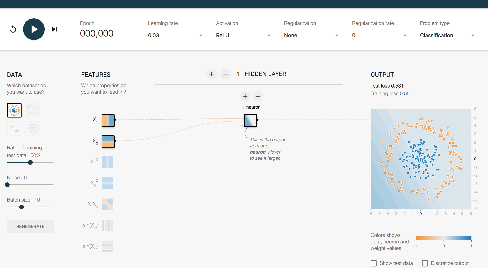

神经网络基础
学习目标
- 目标
- 了解感知机结构、作用以及优缺点
- 了解tensorflow playground的使用
- 说明感知机与神经网络的联系
- 说明神经网络的组成
应用
- 无
1、神经网络
人工神经网络（ Artificial Neural Network， 简写为ANN）也简称为神经网络（NN）。是一种模仿生物神经网络（动物的中枢神经系统，特别是大脑）结构和功能的 计算模型。经典的神经网络结构包含三个层次的神经网络。分别输入层，输出层以及隐藏层。

其中每层的圆圈代表一个神经元，隐藏层和输出层的神经元有输入的数据计算后输出，输入层的神经元只是输入。
- 神经网络的特点
- 每个连接都有个权值
- 同一层神经元之间没有连接
- 最后的输出结果对应的层也称之为全连接层
神经网络是深度学习的重要算法，用途在图像（如图像的分类、检测）和自然语言处理（如文本分类、聊天等）
那么为什么设计这样的结构呢？首先从一个最基础的结构说起，神经元。以前也称之为感知机。神经元就是要模拟人的神经元结构。

一个神经元通常具有多个树突，主要用来接受传入信息；而轴突只有一条，轴突尾端有许多轴突末梢可以给其他多个神经元传递信息。轴突末梢跟其他神经元的树突产生连接，从而传递信号。这个连接的位置在生物学上叫做“突触”。
1.1 感知机(PLA: Perceptron Learning Algorithm))
感知机就是模拟这样的大脑神经网络处理数据的过程。感知机模型如下图：

感知机是一种最基础的分类模型，类似于逻辑回归。感知机最基础是这样的函数，而逻辑回归用的sigmoid。这个感知机具有连接的权重和偏置

我们通过一个平台去演示，就是tensorflow playground
1.2playground使用

那么在这整个分类过程当中，是怎么做到这样的效果那要受益于神经网络的一些特点

要区分一个数据点是橙色的还是蓝色的，你该如何编写代码？也许你会像下面一样任意画一条对角线来分隔两组数据点，定义一个阈值以确定每个数据点属于哪一个组。
其中 b 是确定线的位置的阈值。通过分别为 x1 和 x2 赋予权重 w1 和 w2，你可以使你的代码的复用性更强。

此外，如果你调整 w1 和 w2 的值，你可以按你喜欢的方式调整线的角度。你也可以调整 b 的值来移动线的位置。所以你可以重复使用这个条件来分类任何可以被一条直线分类的数据集。但问题的关键是程序员必须为 w1、w2 和 b 找到合适的值——即所谓的参数值，然后指示计算机如何分类这些数据点。
1.3 playground简单两类分类结果

但是这种结构的线性的二分类器，但不能对非线性的数据并不能进行有效的分类。
感知机结构，能够很好去解决与、或等问题，但是并不能很好的解决异或等问题。我们通过一张图来看，有四个样本数据
与问题：每个样本的两个特征同时为1，结果为1
或问题：每个样本的两个特征一个为1，结果为1
异或：每个样本的两个特征相同为0， 不同为1
根据上述的规则来进行划分，我们很容易建立一个线性模型

相当于给出这样的数据


1.4 单神经元复杂的两类-playground演示

那么怎么解决这种问题呢？其实我们多增加几个感知机即可解决？也就是下图这样的结构，组成一层的结构？

1.5 多个神经元效果演示